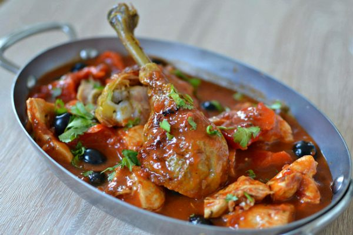
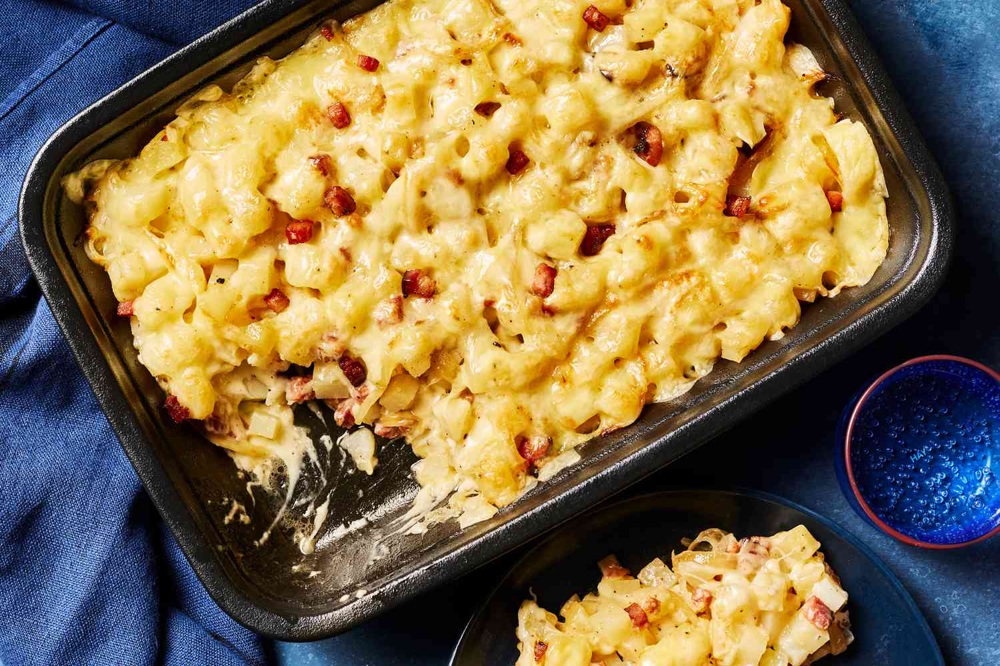
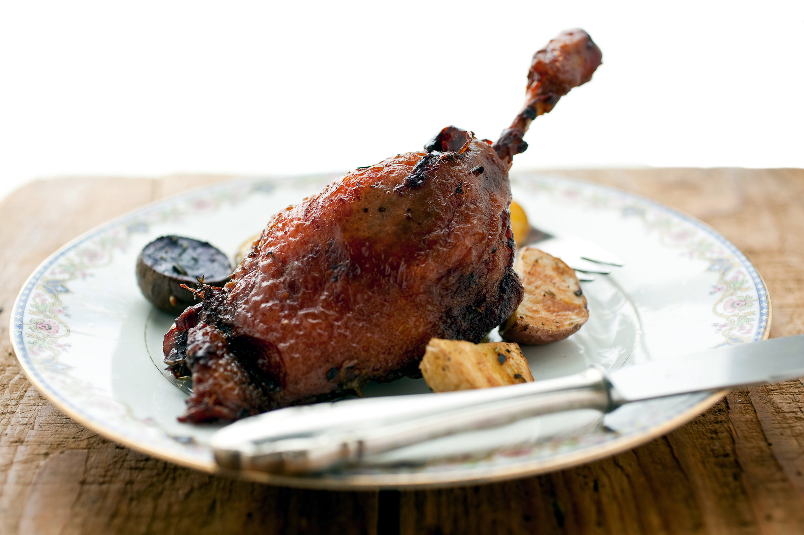
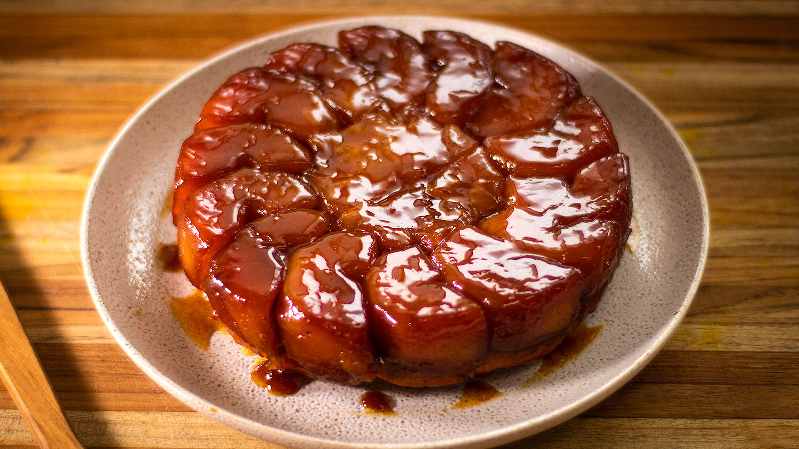

Chateaubriand
Ingredients:
- 1.5 lb beef tenderloin
- 1 tbsp olive oil
- 2 tbsp butter
- 2 cloves garlic, minced
- 1 tbsp fresh thyme
- 1 cup red wine
- Salt and pepper to taste
Instructions:
- Preheat oven to 400°F (200°C).
- Season beef with salt, pepper, and thyme.
- Heat olive oil and butter in a skillet. Brown beef on all sides.
- Transfer to oven and roast for 20 minutes for medium-rare.
- Let rest, then deglaze the skillet with red wine to make sauce.
Season: Best in winter or special occasions.

Poulet Provencal
Ingredients:
- 4 chicken thighs
- 1 tbsp olive oil
- 2 cloves garlic, minced
- 1 cup diced tomatoes
- 1 tbsp fresh basil, chopped
- 1 tbsp fresh thyme
- Salt and pepper to taste
Instructions:
- Heat olive oil in a pan and brown chicken thighs on both sides.
- Add garlic, tomatoes, basil, thyme, salt, and pepper.
- Simmer for 30 minutes until chicken is tender.
Season: Ideal for summer.

Salmon en Papillon
Ingredients:
- 2 salmon fillets
- 1 lemon, sliced
- 1 tbsp butter
- 1 sprig fresh dill
- Salt and pepper to taste
Instructions:
- Preheat oven to 375°F (190°C).
- Place salmon fillets on parchment paper, season with salt and pepper.
- Top with lemon slices, butter, and dill. Fold parchment paper around fish to form a packet.
- Bake for 20 minutes or until salmon is cooked through.
Season: Perfect for spring and summer.

Tartiflette
Ingredients:
- 2 lbs potatoes, peeled and sliced
- 1/2 lb lardons (bacon cubes)
- 1 onion, chopped
- 1/2 cup white wine
- 1 wheel of Reblochon cheese, sliced
- Salt and pepper to taste
Instructions:
- Preheat oven to 375°F (190°C).
- Boil potatoes until tender, drain, and set aside.
- Cook lardons and onions in a pan, then deglaze with wine.
- In a baking dish, layer potatoes, lardons, and onions. Top with cheese slices.
- Bake for 25 minutes until golden and bubbly.
Season: Best in winter.

Duck Confit
Ingredients:
- 4 duck legs
- 2 cups duck fat
- 2 garlic cloves, crushed
- 2 thyme sprigs
- Salt and pepper to taste
Instructions:
- Season duck legs with salt, pepper, and garlic.
- Cover with duck fat and cook slowly in a low oven for 3 hours.
- Serve with crispy potatoes or greens.
Season: Ideal for winter.

Tarte Tatin
Ingredients:
- 6 apples, peeled and sliced
- 1 sheet puff pastry
- 1/2 cup sugar
- 4 tbsp butter
- 1 tsp cinnamon
Instructions:
- Caramelize sugar and butter in a pan, then add apples.
- Cover with puff pastry and bake until golden.
Season: Best in fall with apples in season.